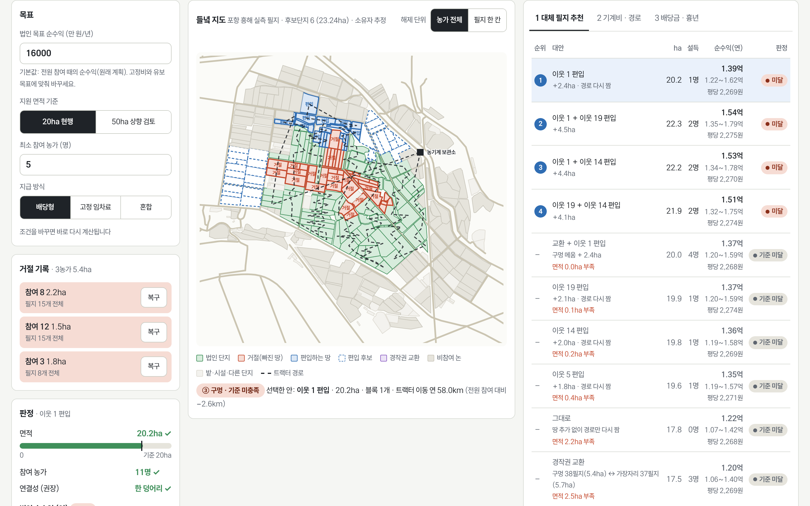
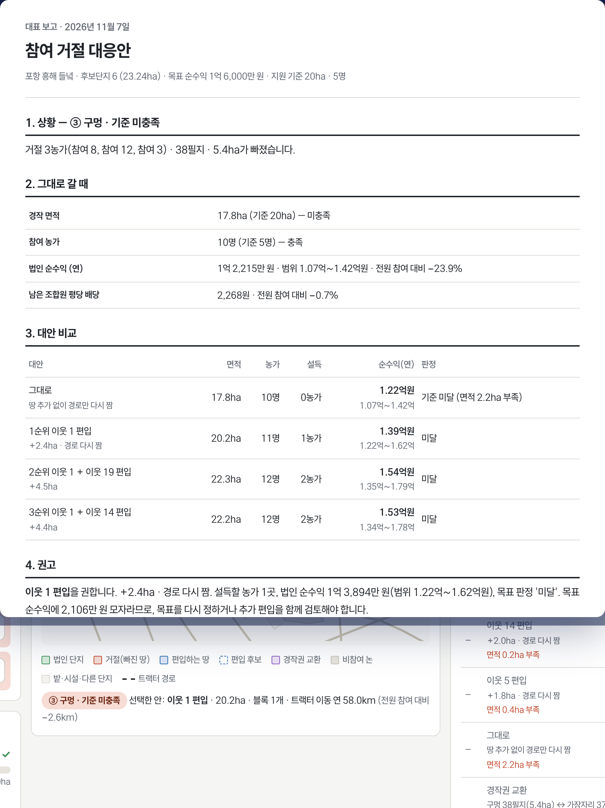
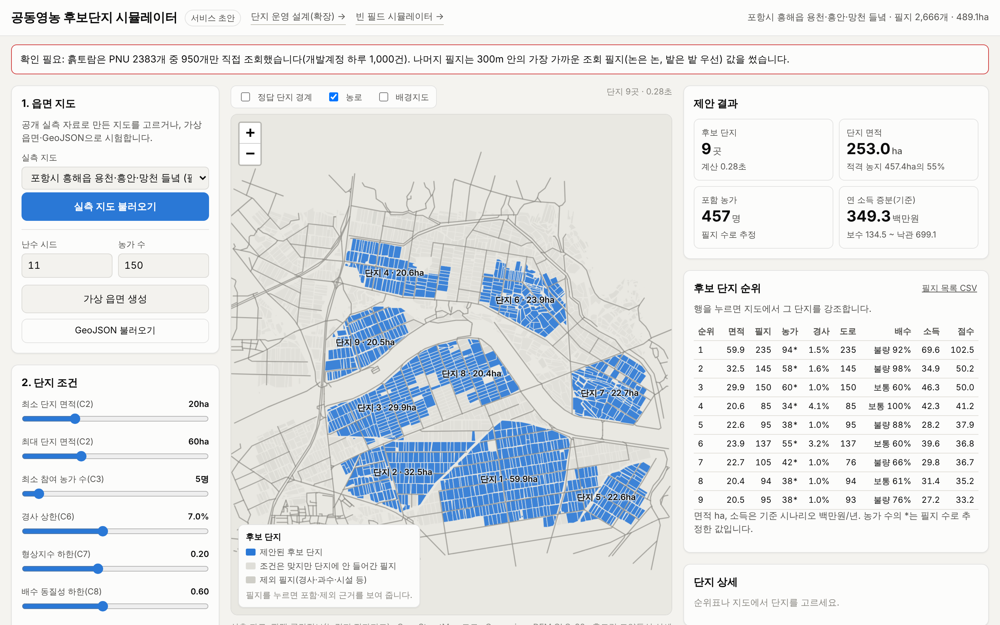
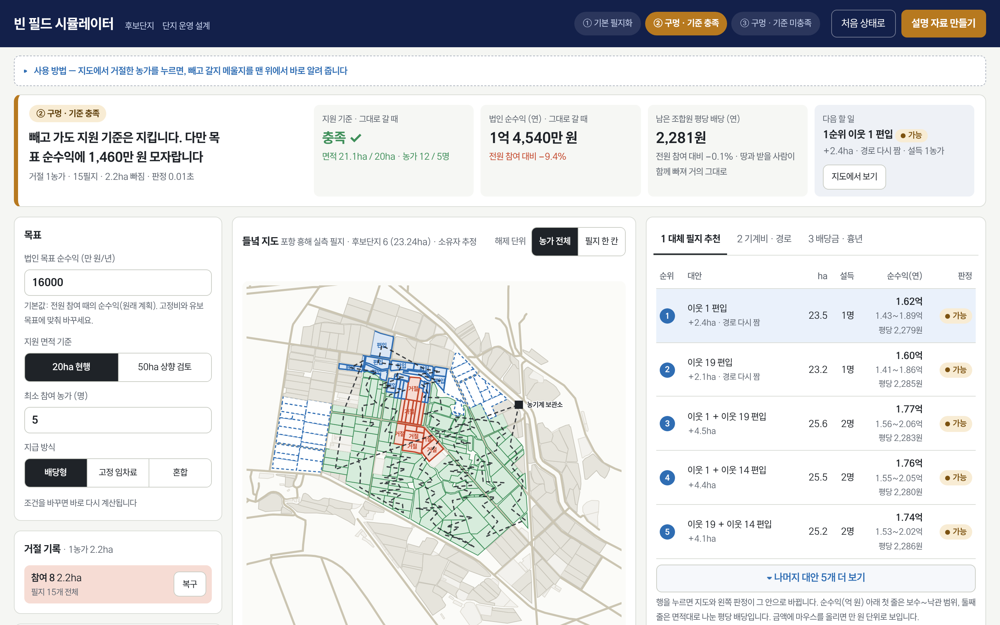
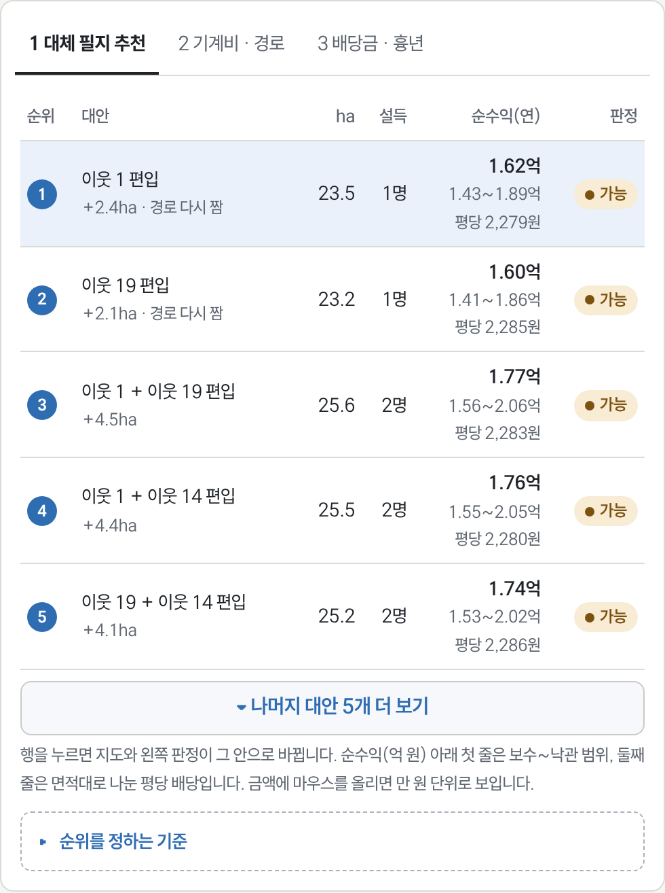
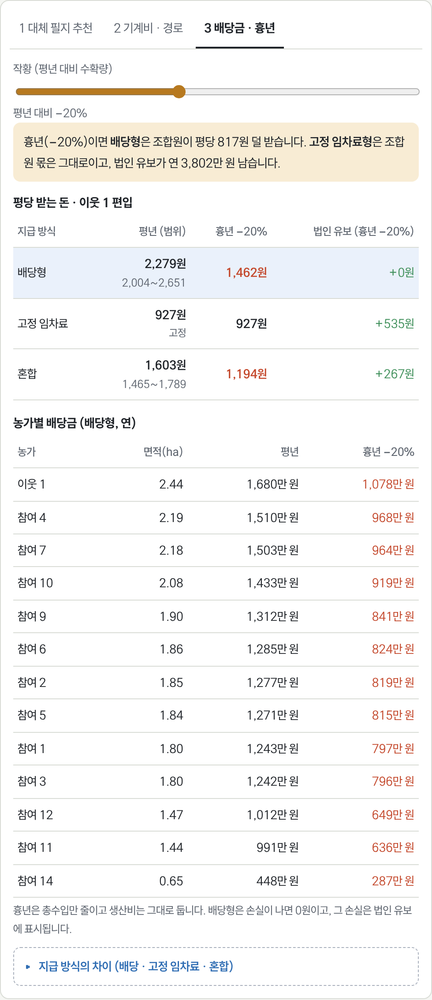
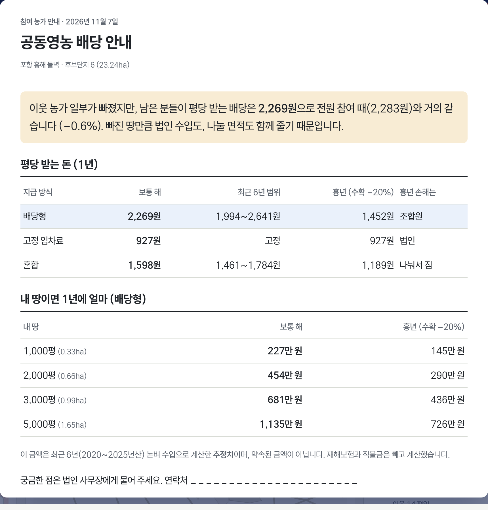

농가 거절로 생긴 빈 땅을 지도 위에서 바로 다시 설계합니다. 지원 기준 충족 여부, 법인 순수익, 남은 조합원의 평당 배당, 대신 설득할 1순위 땅을 거절 당일 보여 주고, 설명 자료 한 장을 인쇄합니다.


농가 인구의 절반이 65세를 넘고, 정부는 2030년까지 공동영농 법인 100개소를 키운다. 선정되면 2년 최대 20억 원을 받지만, 단지는 20ha·농가 5명을 한 덩어리로 채워야 한다.
출처: 경상북도 · 농식품부 2027 예산안 · 국가데이터처 2025 농림어업총조사
20ha·5명 요건을 못 지키면 지원에서 탈락한다. 재설계에 2주 이상 걸리고 설명회를 다시 연다.
지번도와 현장 답사로 후보 1곳 확인에 하루 이상. 탈락 사유 1위가 '집단화 미비·면적 부족'이다.
평당 1,500~4,000원 배당의 산정 근거가 없어 남은 농가가 망설인다. 흉년 때 누가 손해를 지는지도 모른다.
"자료는 저희가 모으지 않습니다. 법인이 컨설팅 업체를 통하거나 자체 회의로 만들어 제출하죠. 탈락은 집단화가 안 됐거나 면적이 부족한 경우가 많습니다. 필지 묶음 화면을 쓴다면 주체는 시가 아니라 법인일 겁니다."
담당자는 이미 선정된 법인은 단지 도면이 지도에 만들어져 있고, 빈 자리가 생겨도 인근 필지로 넓히는 식으로 대응한다고 설명했다. 이런 도구가 필요한 쪽은 사업을 새로 신청하려는 법인, 예컨대 2028년 선정을 준비하는 법인일 것이라고 말했다.
이 외에도 상주시 농정과 담당자와의 통화(비녹음)에서, 이미 선정된 법인보다 사업을 새로 신청하려는 예비 법인에게 이런 도구가 필요하다는 점과 운영 중인 법인은 작업이 한창이라 외부 연락을 받기 어렵다는 점을 확인함.
농가 설득을 위해 설명회를 10회 이상 열었다. 첫 배당 전까지 농가는 배당 약속을 믿지 않았고, 지구별 평당 배당 단가는 산정 근거가 공개된 적이 없다.
20ha·5명 판정, 편입 후보 순위
배당 범위와 흉년 손실 부담
대표용 1장 · 농가용 큰 글자 1장
팜맵 · 흙토람 ·
연속지적도
2,666필지
489ha
연결 · 면적 ·
농가 수 · 도로
서버 없음 ·
법인 자료 없이
학습 데이터가 없어 머신러닝 대신 제약 탐색 · 소유자는 비공개라 필지 수로 농가 수 추정

1조건에 맞는 단지 후보 제안

2빈 땅 표시, 맨 위에 판정

3편입 후보를 순위로 추천

4방식별 배당과 흉년 손실 부담

5대표용·농가용 각 1장 인쇄